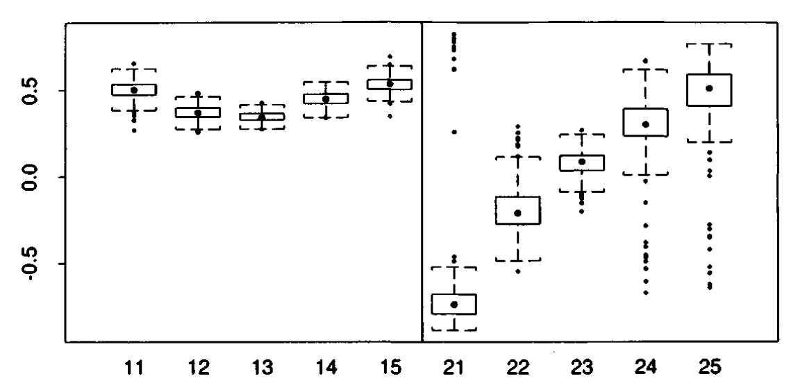
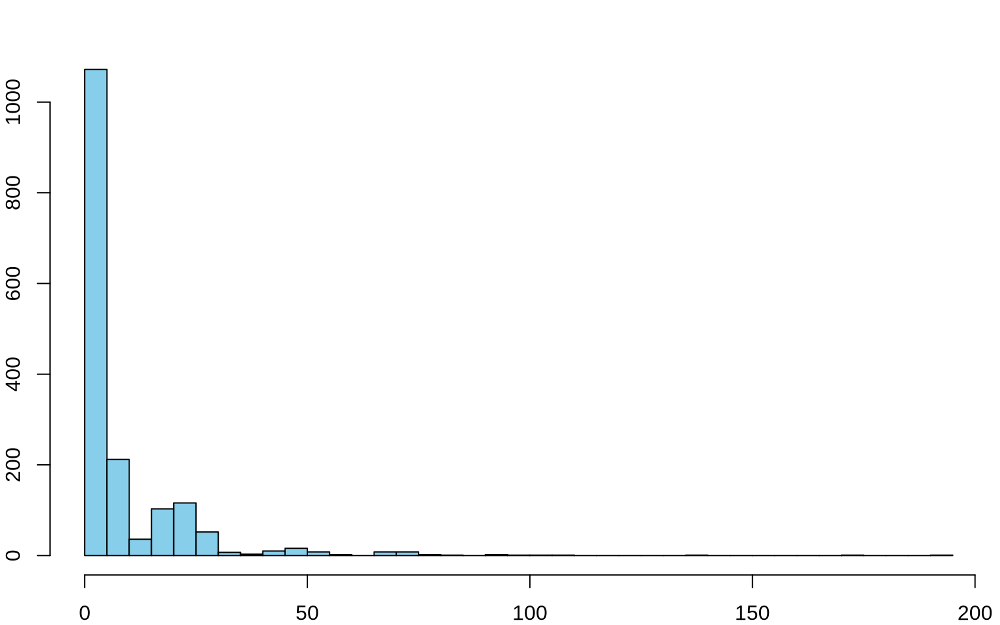
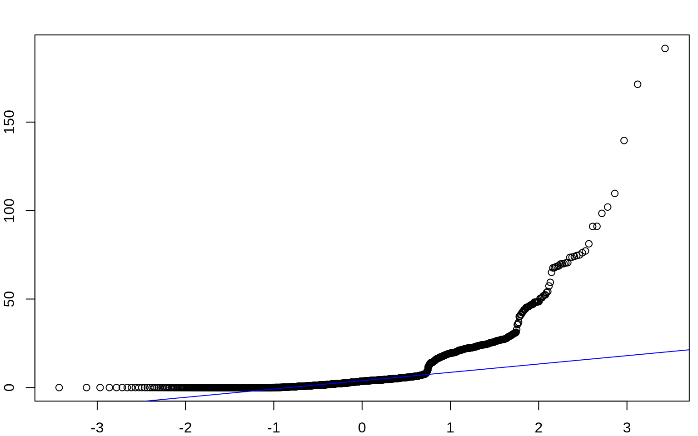
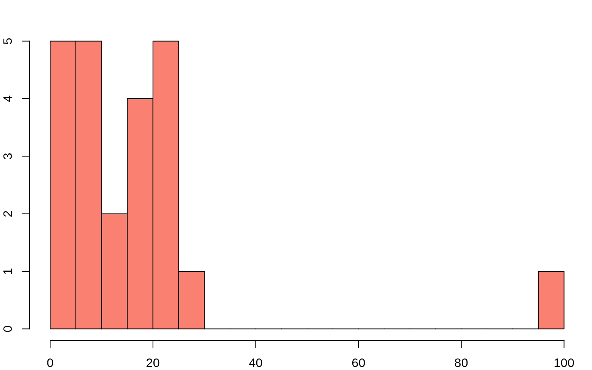
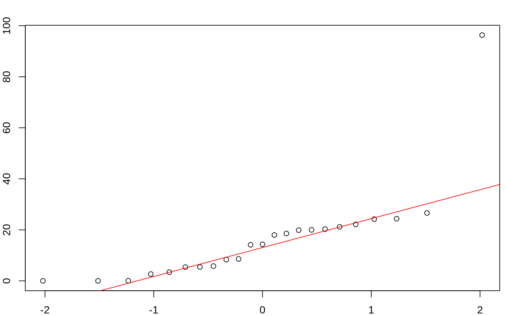
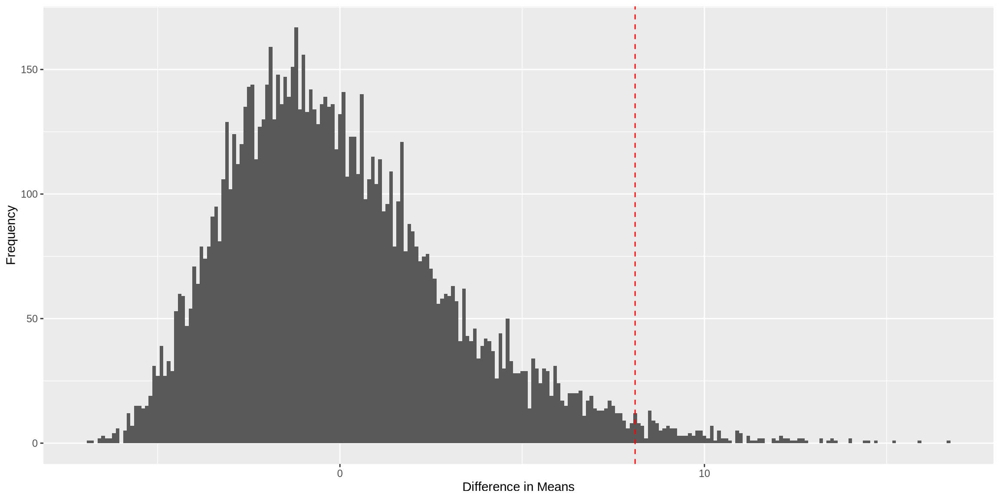

mec vec alg ana sta
1 77 82 67 67 81
2 63 78 80 70 81
3 75 73 71 66 81
4 55 72 63 70 68
5 63 63 65 70 63
6 53 61 72 64 73PSTAT 234 (Fall 2025)
University of California, Santa Barbara
Test score data (Mardia, Kent and Bibby, 1979)
5 tests: mechanics, vectors, algebra, analysis, and statistics (\(n=88\))
First two tests were closed book, last three open book
Score data as an \(88 \times 5\) data matrix \(\mathbf{X}\), the \(i\) th row of \(\mathbf{X}\) \[ \mathbf{x}_i=\left(x_{i 1}, x_{i 2}, x_{i 3}, x_{i 4}, x_{i 5}\right). \]
First few lines of the data matrix are:
mec vec alg ana sta
1 77 82 67 67 81
2 63 78 80 70 81
3 75 73 71 66 81
4 55 72 63 70 68
5 63 63 65 70 63
6 53 61 72 64 73\(\overline{\mathbf{x}}= \frac{1}{88}\sum_{i=1}^{88} \mathbf{x}\) is the vector of column means, \[ \begin{aligned} \overline{\mathbf{x}} & =\left(\bar{x}_1, \bar{x}_2, \bar{x}_3, \bar{x}_4, \bar{x}_5\right) =(38.95,50.59,50.60,46.68,42.31) \end{aligned} \]
Covariance of tests \((j, k)\) is \(G_{jk} = \frac{1}{88} \sum_{i=1}^{n} (x_{ij} - \bar{x}_j)(x_{ik} - \bar{x}_k)\) and the covariance matrix \(\mathbf{G}\) is
\[ \mathbf{G}=\left(\begin{array}{ccccc} 302.3 & 125.8 & 100.4 & 105.1 & 116.1 \\ 125.8 & 170.9 & 84.2 & 93.6 & 97.9 \\ 100.4 & 84.2 & 111.6 & 110.8 & 120.5 \\ 105.1 & 93.6 & 110.8 & 217.9 & 153.8 \\ 116.1 & 97.9 & 120.5 & 153.8 & 294.4 \end{array}\right) \]
| Eigenvalue (\(\hat{\lambda}_i\)) | Eigenvector (\(\hat{\mathbf{v}}_i\)) |
|---|---|
| 679.2 | (.505, .368, .346, .451, .535) |
| 199.8 | (-.749, -.207, .076, .301, .548) |
| 102.6 | (-.300, .416, .145, .597, -.600) |
| 83.7 | (.296, -.783, -.003, .518, -.176) |
| 31.8 | (.079, .189, -.924, .286, .151) |
| Interval |
|---|
| \(\hat{\theta} \pm z^{(1-0.05)} \hat{\mathrm{se}} = [.542,\ .696]\) |
| \([\hat{\theta}^*_{(0.05)}, \hat{\theta}^*_{(0.95)}] = [.545,\ .693]\) |
First principal component: \(\hat{\mathbf{v}}_1=(.51, .37, .35, .45, .54)\)
Second principal component: \(\hat{\mathbf{v}}_2=(-.75,-.21, .08, .30, .55)\)

Bootstrap Estimates of Principal Components, \(\hat{\mathbf{v}}_1\) (left panel) and \(\hat{\mathbf{v}}_2\) (right panel) shows empirical distribution of the 200 bootstrap replications \(\hat{v}_{i k}^*\).
| First PC: \(\hat{\mathbf{v}}_1\) | \(\hat{v}_{11}\) | \(\hat{v}_{12}\) | \(\hat{v}_{13}\) | \(\hat{v}_{14}\) | \(\hat{v}_{15}\) |
|---|---|---|---|---|---|
| \(\widehat{\operatorname{se}}_{200}\) | .057 | .045 | .029 | .041 | .049 |
| \(\widetilde{\operatorname{se}}_{200, .84}\) | .055 | .041 | .028 | .041 | .047 |
| \(\widetilde{\operatorname{se}}_{200, .90}\) | .055 | .041 | .027 | .042 | .046 |
| \(\widetilde{\operatorname{se}}_{200, .95}\) | .054 | .048 | .029 | .040 | .047 |
| Second PC: \(\hat{\mathbf{v}}_2\) | \(\hat{v}_{21}\) | \(\hat{v}_{22}\) | \(\hat{v}_{23}\) | \(\hat{v}_{24}\) | \(\hat{v}_{25}\) |
|---|---|---|---|---|---|
| \(\widehat{\operatorname{se}}_{200}\) | .189 | .138 | .066 | .129 | .150 |
| \(\widetilde{\operatorname{se}}_{200, .84}\) | .078 | .122 | .064 | .110 | .114 |
| \(\widetilde{\operatorname{se}}_{200, .90}\) | .084 | .129 | .067 | .111 | .125 |
| \(\widetilde{\operatorname{se}}_{200, .95}\) | .080 | .130 | .066 | .114 | .120 |
Comparison of two samples are commonly carried out by hypothesis testing: e.g., two sample t-test.
Under the null hypothesis, the two samples are exchangeable.
Construct the null distribution of the test statistic by first randomly permuting the labels of the two samples.
Two-Sample Permutation Test
Verizon was an Incumbent Local Exchange Carrier (ILEC)
Competitors were termed Competitive Local Exchange Carriers (CLEC)
When something went wrong, Verizon was responsible for all infrastructure repairs
The New York Public Utilities Commission (PUC):




Welch Two Sample t-test
data: CLEC and ILEC
t = 1.9834, df = 22.346, p-value = 0.02987
alternative hypothesis: true difference in means is greater than 0
95 percent confidence interval:
1.091721 Inf
sample estimates:
mean of x mean of y
16.509130 8.411611 # Calculate the observed difference in means
observed_diff <- mean(CLEC) - mean(ILEC)
set.seed(123)
# Function to perform permutation test
permutation_test <- function(data1, data2, num_permutations = 10000) {
combined <- c(data1, data2)
perm_diffs <- numeric(num_permutations)
for (i in 1:num_permutations) {
permuted <- sample(combined)
perm_clec <- permuted[1:length(data1)]
perm_ilec <- permuted[(length(data1) + 1):length(combined)]
perm_diffs[i] <- mean(perm_clec) - mean(perm_ilec)
}
return(perm_diffs)
}
# Perform the permutation test
perm_diffs <- permutation_test(CLEC, ILEC)
# Calculate the p-value
p_value <- mean(abs(perm_diffs) >= abs(observed_diff))
# Plot the permutation distribution
perm_diffs_df <- data.frame(perm_diffs = perm_diffs)
ggplot(perm_diffs_df, aes(x = perm_diffs)) +
geom_histogram(binwidth = 0.1) +
geom_vline(aes(xintercept = observed_diff), color = "red", linetype = "dashed") +
labs(x = "Difference in Means", y = "Frequency")
| Test | p-value |
|---|---|
| t-test | 0.0299 |
| Permutation | 0.0183 |